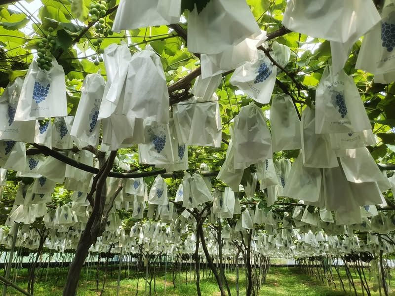
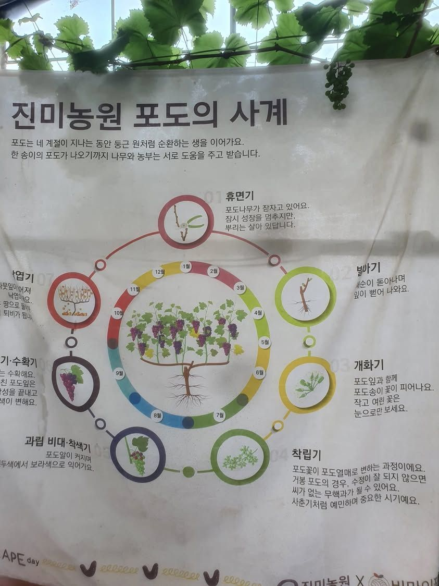

Our Story
필요 이상의 것을 더하지 않는 농사
“농원 이름을 ‘진미’라 지을 때, 자연이 익혀주는 맛을 담는 먹거리를 짓자고 마음먹었어요. 이제 현장에서 만나는 분들 덕분에 그 이름값이 드러나고 있어요.” — 진미농원 농부 박민희
2013년, 고향 정읍으로 돌아와 유기인증 땅을 구하는 것부터 시작했습니다. 농부도 엄마이기에 “내 가족이 먹는다”는 마음으로, 얼굴 있는 건강한 먹거리를 키웁니다.
건강한 흙이 건강한 식물을 키우는 과정을 관찰하고, 시기에 따라 농부가 해야 할 일손을 알아보며 직접 수확해 봅니다. 자연의 소중함과 생명 산업인 농업의 가치를 일깨워 건강한 마음을 키우는 곳이에요.
포도밭은 아이들에게는 놀이터, 어른들에게는 쉼터가 됩니다. 장애인과 비장애인, 아이와 어르신 모두 자연의 다양성처럼 함께 어울리는 농장을 꿈꿉니다.
- 2013정읍 신태인 천단마을로 귀농, 유기농 첫 농사 시작
- 2015농촌교육농장 교사 양성과정 수료
- 2017체험교육 35회 · 700여 명과 포도밭을 나누다
- 2024전북 친환경 소비자 맞춤형 체험 운영 · 한국농정신문 소개
- 2025포도밭 치유농업 프로그램 시범 운영